<!-- header.html -->
<style>
  /* HEADER STYLES MANAGED HERE */
  .site-header {
    display: flex;
    align-items: center;
    justify-content: space-between;
    padding: 0.75rem 2rem;
    background: #052D6B;
    position: sticky;
    top: 0;
    z-index: 999;
  }
  .site-header .logo {
    height: 50px;
    width: auto;
    display: block;
  }
  .site-header nav {
    display: flex;
    align-items: center;
  }
  .site-header nav a {
    color: #fff;
    margin-left: 1.5rem;
    text-decoration: none;
    font-weight: 600;
    font-family: 'Open Sans', sans-serif;
  }
  .site-header nav a:hover {
    text-decoration: underline;
  }
</style>
<header class="site-header">
  
  <button class="menu-toggle" type="button" aria-label="Toggle navigation" aria-expanded="false" aria-controls="site-nav">
    <span class="icon">☰</span>
    <span class="label">Menu</span>
  </button>
  <nav id="site-nav">
    <a href="index.html">Home</a>
    <a href="about.html">About</a>
    <a href="publications.html">Publications</a>
    <a href="research.html">Research</a>
    <a href="teaching.html">Teaching</a>
    <a href="news.html">News</a>
  </nav>
</header>
